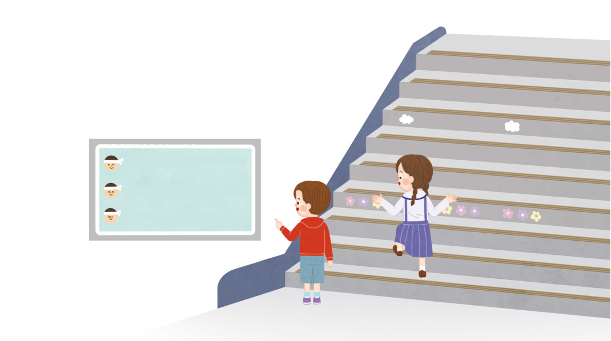

계단을 한 칸 오를 때마다 0.15 킬로칼로리를 소모한다고 합니다. 소모하는 열량의 소수점 위치가 달라지는 규칙을 알아봅시다.
건강한 습관,
계단 오르기
힘내서
마지막 계단까지!
0.15×1=0.15
1 계단 오르면
(킬로칼로리)
0.15×10=1.5
10 계단 오르면
(킬로칼로리)
0.15×100=15
100 계단 오르면
(킬로칼로리)
(출처: 행정안전부, 2024)

영상을 보고 계단 1칸, 계단 10칸, 계단 100칸을 오를 때 소모하는 열량을 나타낸 계산식에서 다른 점을 말해 보세요.
곱하는 수가 1, 10, 100으로 다릅니다.
계산 결과가 0.15, 1.5, 15로 다릅니다.
계산한 값의 소수점 위치가 다릅니다.
입력타입토글
리셋
제출